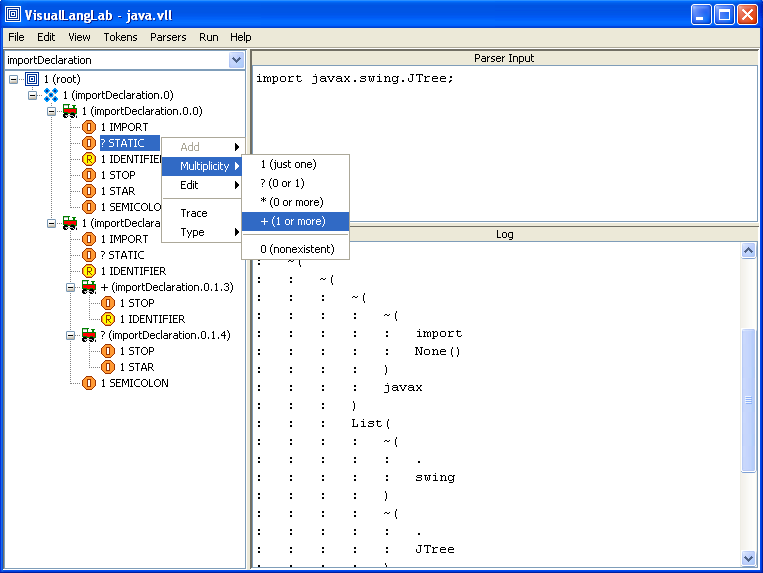

|
VisualLangLab is an IDE for creating, testing, and running parsers for LL(*) grammars using parser combinators in a purely visual environment without code or scripts of any kind. It enables you to quickly produce backtracking, recursive-descent, LL(*) parsers with only a minimal knowledge of programming in Scala (or any other language). Parsers can be tested incrementally as they are being built within the IDE, without needing to generate or compile code, or to use any other tools. Development with VisualLangLab is fast as it uses Scala's parser combinator capabilities to build complex parsers on the fly at run-time. So an iterative, incremental development process works very well. This introductory tutorial helps you to understand how it all works. But VisualLangLab is also bundled with some example parsers (choose "Help -> Samples" from the main menu) that allow you to start tinkering with working examples right away. |
 |
You only have to download a single jar file: https://vll.dev.java.net/files/documents/10973/149754/VisualLangLab.jar. The program is started by executing the following command:
scala -cp VisualLangLab.jar net.java.dev.vll.VisualLangLab
You must have Scala 2.8 (get the Beta1 pre-release) installed. In turn, Scala 2.8 requires Java 1.5 or higher. The program has been tested on Windows-XP and Ubuntu-9.10.
There are plans to add the following features:
This project may provide an opportunity for developers to participate in a variety of ways. If you are interested in participating please send an inquiry to the owner at owner@projectname.dev.java.net (replace "projectname" with the name of this project)
If you are a member, you can see the current list of members here
If you are not a member, you can request membership to this project here.
If you wish to subscribe to one of this project's mailing lists, click here
To submit a project issue, or query existing issues, click here